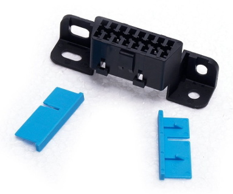
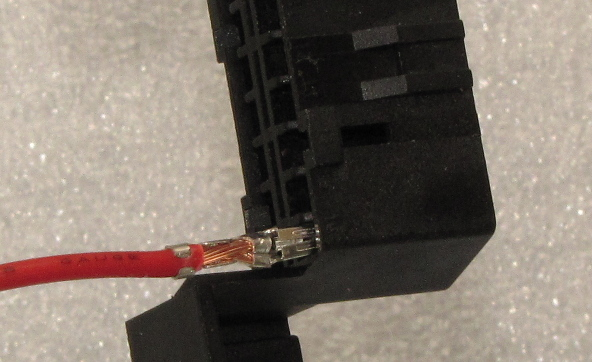
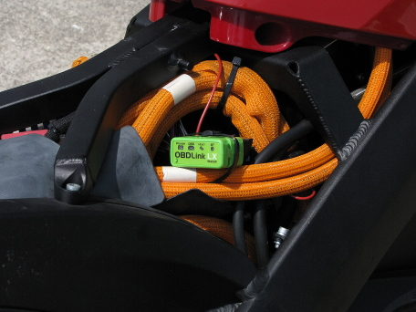
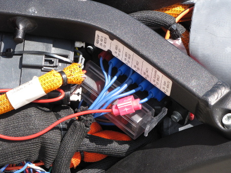

My Zero SR electric motorcycle broadcasts the current range on the CANBUS, and I have a page describing the format.
The CANBUS is available on the OBD-II diagnostic port, and there are small "dongles" that capture and filter this information, and transmit it over USB, Wi-Fi, or Bluetooth. They all use an ELM327 chip, which has a standard programming API.
Unfortunately, Zero does not supply power to pin 16 as per the standard, so they don't work.
Making things even more difficult is the fact that the port is in a location where it's impossible to work with it.
I've written an Android application to display range from the dongle, and the source is available on GitHub as an Android Studio project.
There are dozens of brands available on Amazon. Most of them are unsecure cheap Chinese knockoffs.
For example, I bought a "Kitbest", which has absolutely no security. Anyone standing nearby can pair with it and gain access to the internal systems of the bike. It has no status or activity lights. It also has a counterfeit ELM327 chip, and announces a version number that ELM Electronics has never made, plus it doesn't understand several of the standard API commands. It was good for testing my code, though.
The dongle I selected was the ScanTool 427201 OBDLink LX Bluetooth. It has good security, where you must press a physical button and it will only pair for a limited time. It has status and activity LEDs to help debug issues. Another feature is a sleep function, where it powers down to avoid draining the vehicle's battery. This isn't quite so important in our application since it will be on a switched power supply.
Owners of 2017 and newer Zeros are lucky, as the port is now located under the seat. They might also have power on pin 16. You can visually tell if there's a pin there or not. You can also see if the dongle lights up.
Older bikes have it located in an almost inaccessible location, and you need to move it in order to add the power pin. Here is the procedure I used:
Order a pair of "Fotag" J1962 female OBD-II sockets from Amazon. https://www.amazon.com/dp/B01ETRIDUI
This is the same connector as the stock one. You won't need the actual connector, but you will need one of the pins and one of the blue retainer clips.
This has an unusual pin retention design. Instead of the usual barbs on each pin, it has two blue clips that slide in to hold each row of pins. To insert another pin, you'll need to pry out one of these clips from the stock connector, which will destroy it.
Strip about 1/4" from the end of a piece of 18-gauge wire, and crimp one of the pins to it.
Insert the pin into position #16 in the proper orientation (see photo)
Slide a new blue clip in, until it locks into place.
Hook the other end of the wire to the lowest amperage fusebox line using a Scotchlok tap. I would have much rather used the SAE accessory plug, but it's on a different isolated circuit, and doesn't reference the same ground as the data signal.
